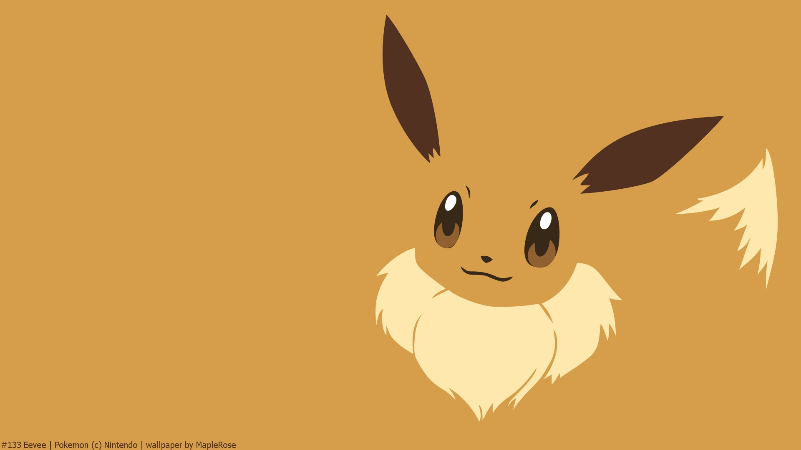
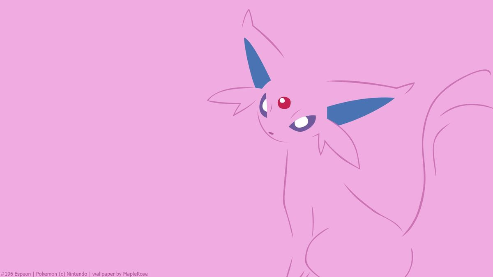
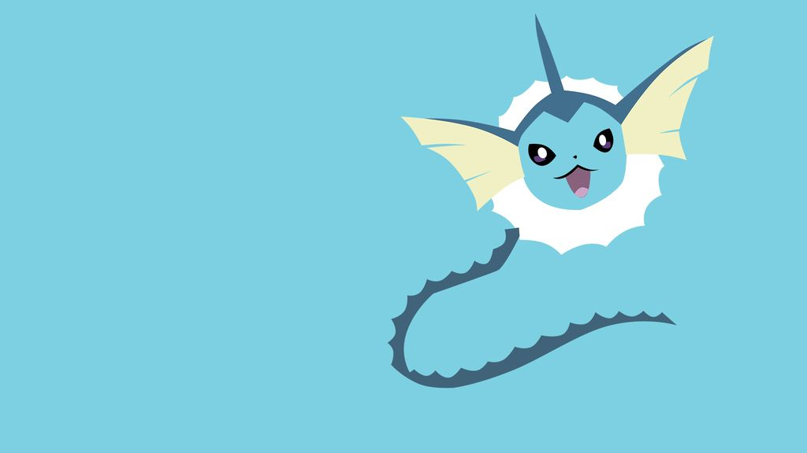
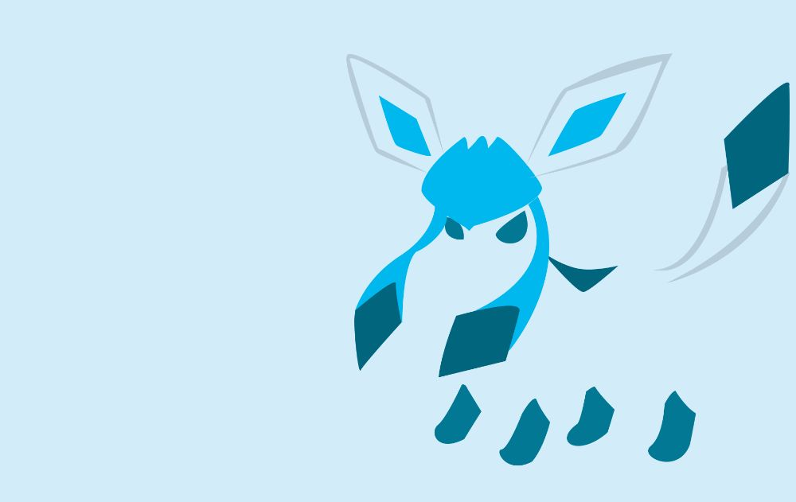
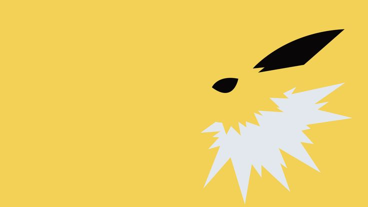
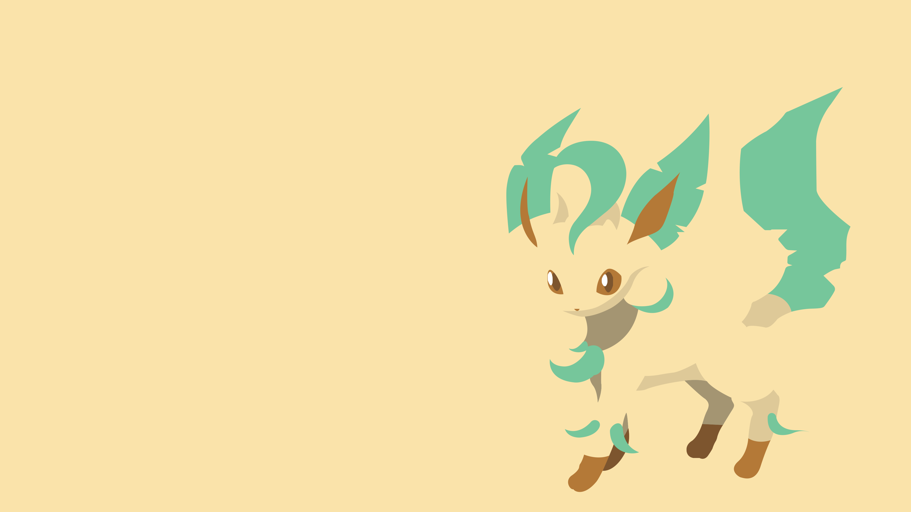
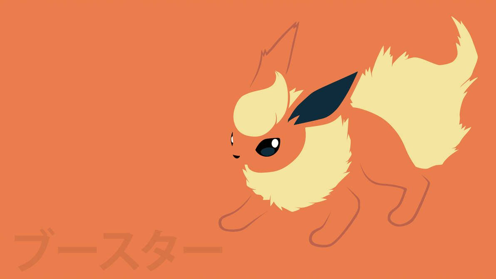
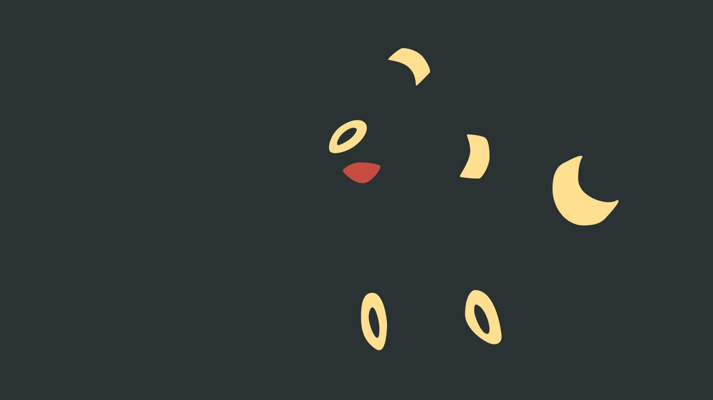

-

Eevees
Conheça mais sobre o pokemon mais fofo neste site!
-

Espeon
Espeon, o Pokémon Sol de tipo Psíquico, evolui do Eevee por amizade durante o dia. Com aparência felina, usa os finos pelos do corpo e sua joia na testa para prever movimentos inimigos e o clima, sendo extremamente leal ao treinador.
-

Vaporeon
Vaporeon, a evolução de água do Eevee, é conhecida por sua estrutura celular similar à água, permitindo que se liquefaça e fique invisível para caçar ou se esconder. Adaptado à vida aquática com guelras e barbatanas, este Pokémon calmo vive perto de lagos e seu design é inspirado em sereias e golfinhos.
-

Glaceon
Glaceon, a evolução de gelo do Eevee introduzida na Geração IV (Sinnoh), é conhecida por controlar sua temperatura corporal a -60°C para congelar a umidade do ar, criando cristais de gelo.
-

Jolteon
Jolteon é conhecido por sua velocidade extrema (semelhante a uma chita) e personalidade sensível que muda de humor rapidamente, causando picos de energia. Seus pelos são agulhas afiadas que disparam cargas de 10 mil volts, e ele brilha em verde na forma Shiny.
-

Leafeon
Leafeon, a evolução do tipo Grama do Eevee (introduzida na Gen IV), realiza fotossíntese para produzir ar limpo, permitindo-lhe viver pacificamente em florestas. Ele afia sua cauda como uma lâmina afiada capaz de cortar grandes árvores.
-

Flareon
Flareon, a evolução tipo Fogo do Eevee (#136), é conhecido como o Pokémon Chama, com temperatura corporal que pode atingir 900°C e chamas internas superiores a 1700°C.
-

Umbreon
Umbreon é um Pokémon do tipo Sombrio introduzido na 2ª Geração, evoluindo do Eevee com alta amizade à noite. Conhecido como "Pokémon Luar", seus anéis amarelos brilham com energia misteriosa, e ele é famoso por ser um "tank" defensivo.